目标站点情况
如下图，可以看到请求和响应都加密了，不过有突破口，可以看到请求参数是{“xxx-param”:”xxxxxxxxx”}这种格式。运气好的话，只需要去F12搜索xxx-param即可定位到目标。
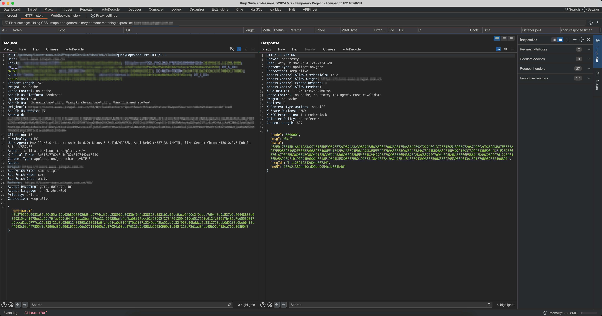
定位加解密函数
直接搜索xxx-param，10秒钟定位到目标函数。但是看到encrypt后面跟的这个字符串，感觉不妙，怕是非对称加密。先不管，根据加密的代码，找一下解密代码，果不其然，现在已经拿到了加解密函数：
- y[“b”].encrypt()
- y[“b”].decrypt()
以及加密用到的公钥req-pubkey以及解密需要的私钥resp-prikey：
- MIGfMA0GCSqGSIb3DQEBAQUAA4GNADCBiQKBgQCVYKTzIhIQiUkixXUhLakag96jJ7L+9cBXUjWVCyluXKlX+VeG7BROK6OiV5apk6f36tlm52q61gE1bqRk+m2K2w6KqV…………0C+ouzJ+GU1wKcGAxEZS5+bjzT7HoRgt5QIDAQAB
- MIICdwIBADANBgkqhkiG9w0BAQEFAASCAmEwggJdAgEAAoGBAI3ZNKQ18Tdy+Gr/9wsKNziXwYKocj/62szhgptKURTZfaDs2RCFnY1cUt3JIpoFZRb828iyWCzEgaQF9quOOqzFJ/rPtevkwmOswvBEf0RUDVufuHuRRHSc8jy6MwK/1j7t4T22WCHwTw5ioIG9H98KXNvY9nWk4O5asn2IsMb7AgMBAAECgYAL1afmiBjwezdOV2hpSOMTkIG/dhtWIDFPb68sZ/ZngBUoWdUVuPgh+lEa757jQnj319qPHjtsvMEONMXVnrUMDknNPI1L7gxRPUT4ljcLGYPimDsgCEyK/QOtTGmKOblDre0tTu56TlPEtLrI1HR4eD2mS2DSY9jpxKWm……………w+Uc2kmVKlYMhxkAn0VP8gdlDRQ/yNhVhdPSlEZ8UYsY4rIyN/BezRAkEAh3LmxD2Dxmp4OY/3GFNRGdNeoHpzQU2SLW58Xfvia3gtTQegh1DATtWxbmpf4ne2wAQPH/6VHyfr4B9/9Cc76wJAChq/yE5pTFGoIXp7azhsBVMynFiJTyg5zLvkHCB9Yysirv1pXiUNd7SjBmLHwORNi4We7e0U4R5QH9KjzgAAEQJBALR+KB5NmY1e8tsl8RzUNrrTjnk+DdFry3/qRo/lEbDVmcXuNOcx9I2QU4BB1gZwVv5knjDm8Xqy3u3TIhYHTe8=
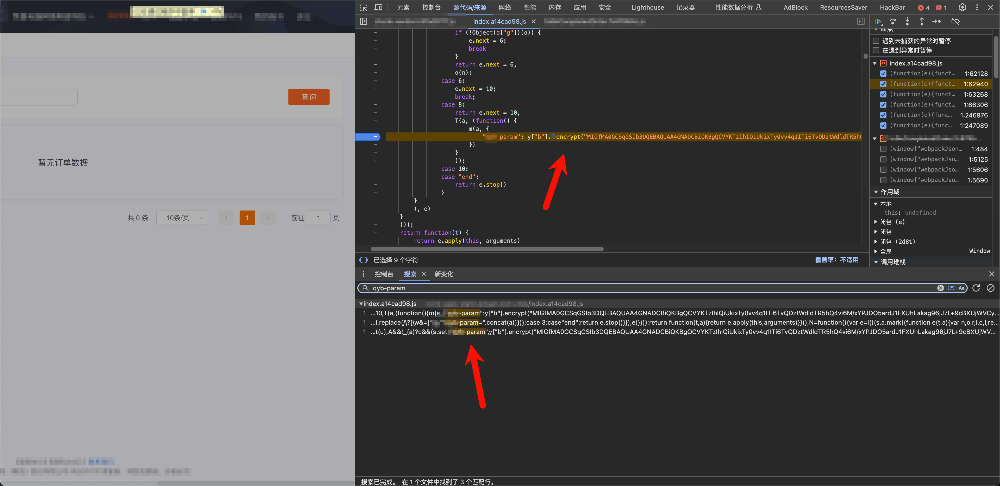
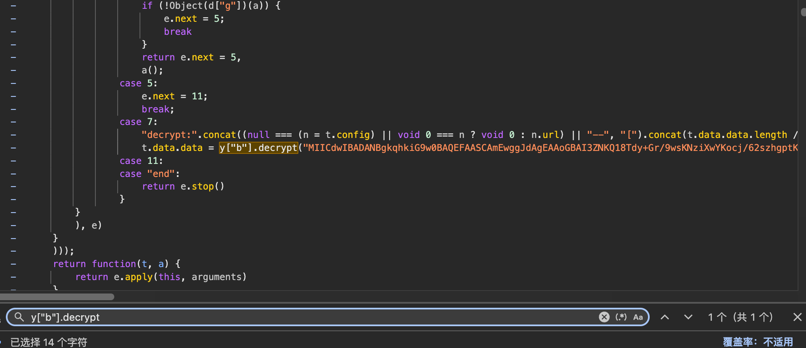
因为是非对称加密，所以我如果想解密请求参数，或者篡改响应重新加密，就必须拿到请求加密的公钥对应的私钥（req-prikey）和解密响应的私钥对应的公钥（resp-pubkey）。一般情况下是拿不到这东西，不过有些开发可能会用req-pubkey加密响应返回，也就是说，请求和响应的加解密用的是一套密钥。这里我抓一个包，拿到密文请求，在console中尝试使用resp-prikey进行解密。可以看到上面是解密响应密文，正常发挥了明文结果，但是下面是尝试解密请求密文，显然不行，这个系统的开发们还是可以的。
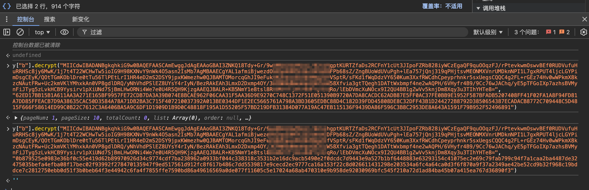
编写脚本
那么在这种情况下，我如果想要在bp中直接抓明文数据包，查看明文响应该怎么办呢，查看明文响应很简单，直接使用JsRpc调用y[“b”].decrypt()即可。那抓明文请求，这里我的思路是，修改加密函数，使之返回明文，然后在bp中通过JsRpc调用y[“b”].encrypt()将函数再加密。思路有了，先把加解密函数代理出来。
1 | window.rsaencode = y["b"].encrypt |
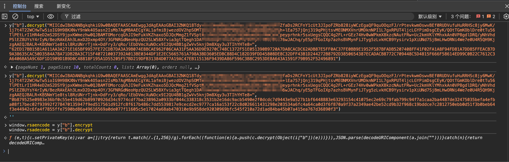
然后放掉debug断点，开始连接JsRpc
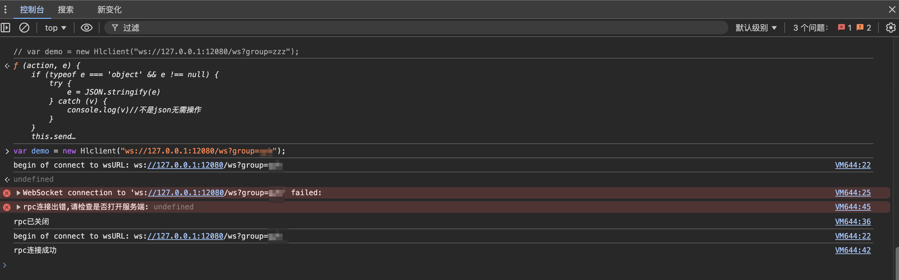
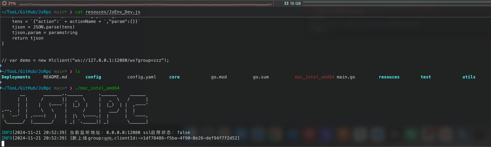
再然后，先把解密函数写完，这边思路比较简单，在处理响应密文时，我保留了原始密文，在原始响应json中新加入了一个decode-data来存放解密后的明文。想过如图。
1 | def rsadecode(data): |
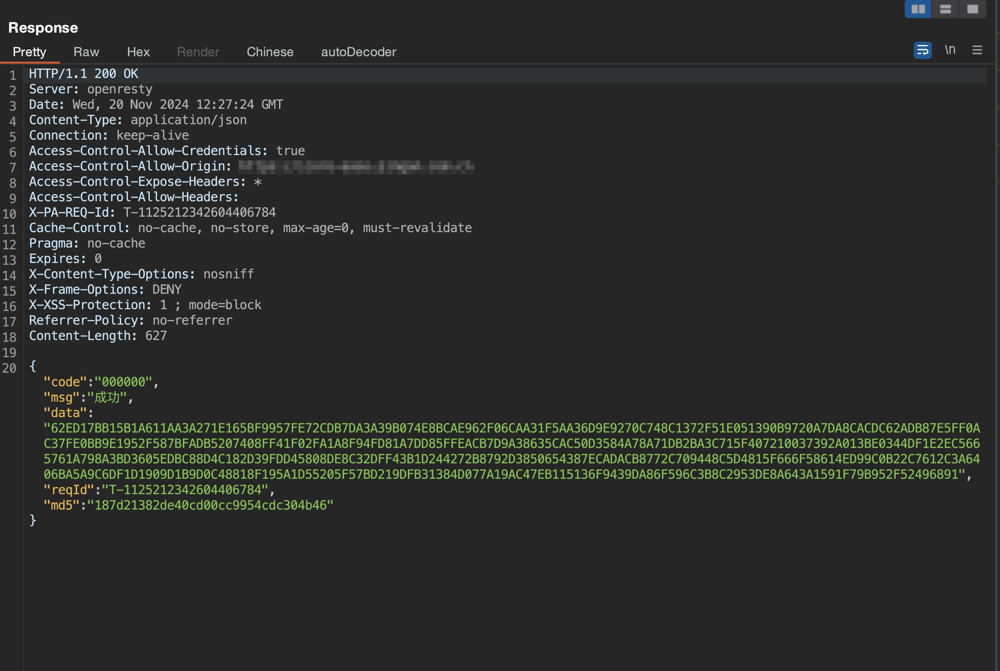
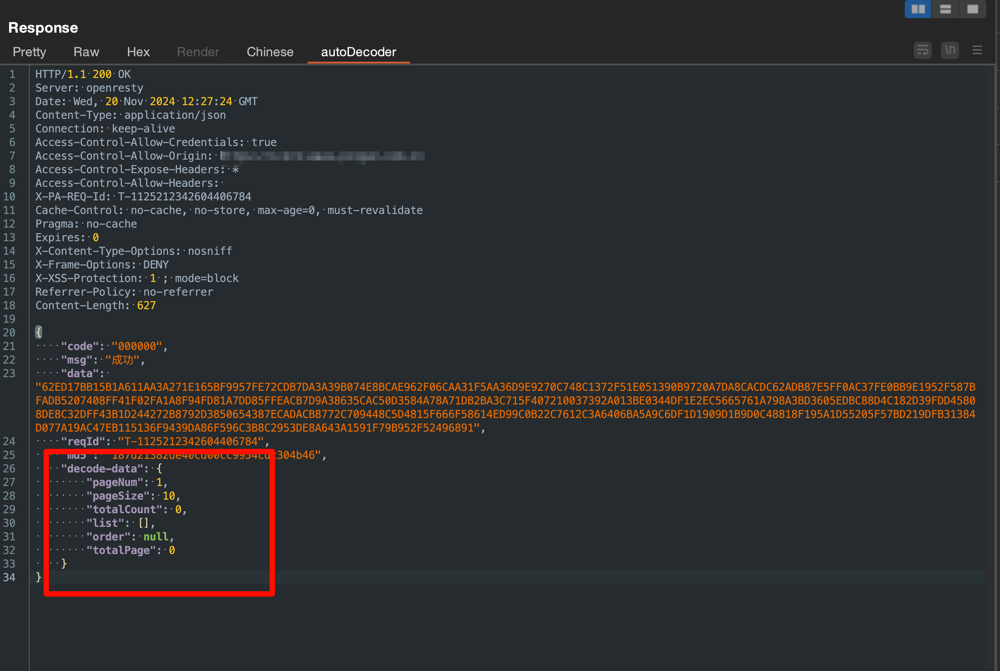
再然后是加密过程，首先要修改加密函数，让它返回明文。由于我撇脚的js和hook水平，这里我找AI要了个hook函数。注意，这里要避开JsRpc连接的那个标签页，要重新开一个标签页hook。
1 | const originalEncrypt = y["b"].encrypt; |
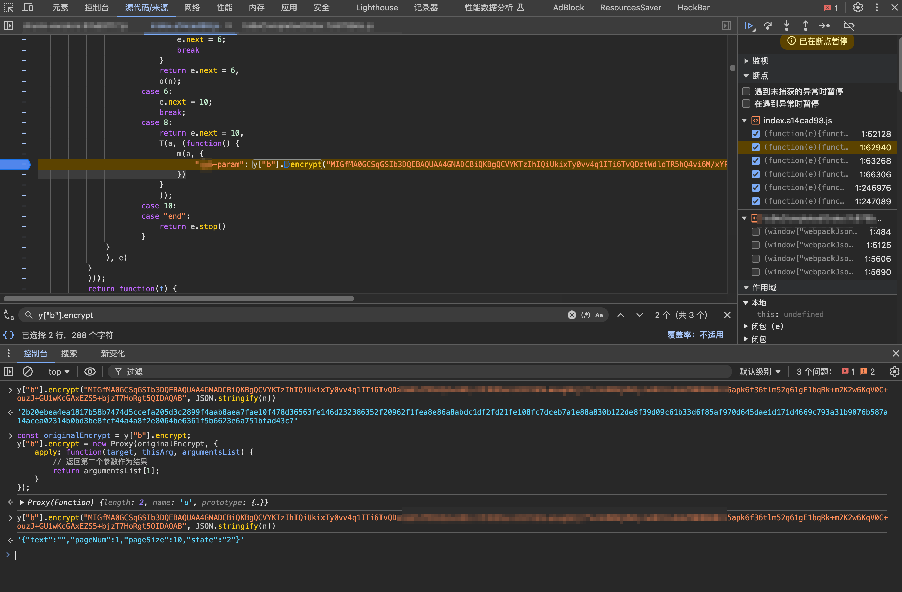
现在在这个hook后的标签页中点击各种功能点，就可以发现抓到的包都是密文了。
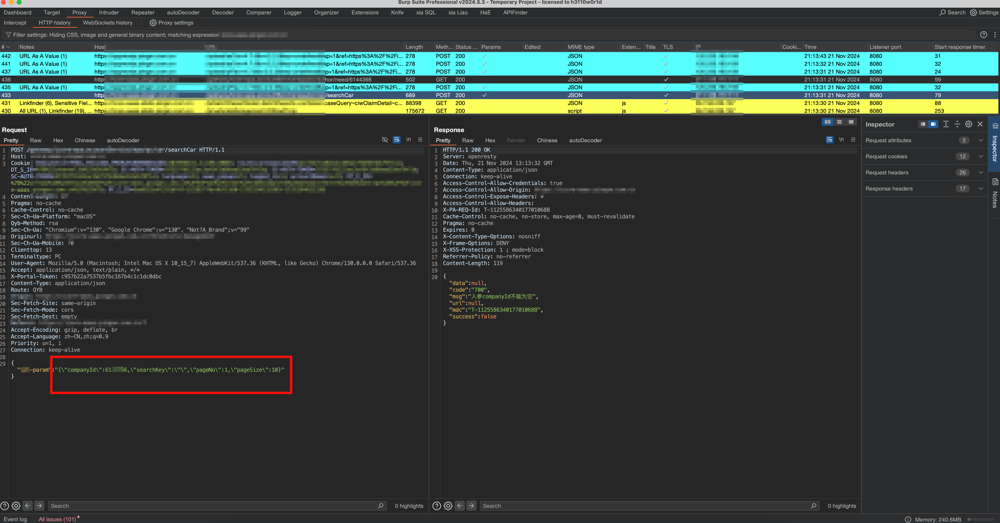
但是可以看到，我明明传入了companyId，却提示”入参companyId不能为空”。显然我现在还需要将参数再次加密，这里就和前面写解密一样了，
1 | def rsaencode(data): |
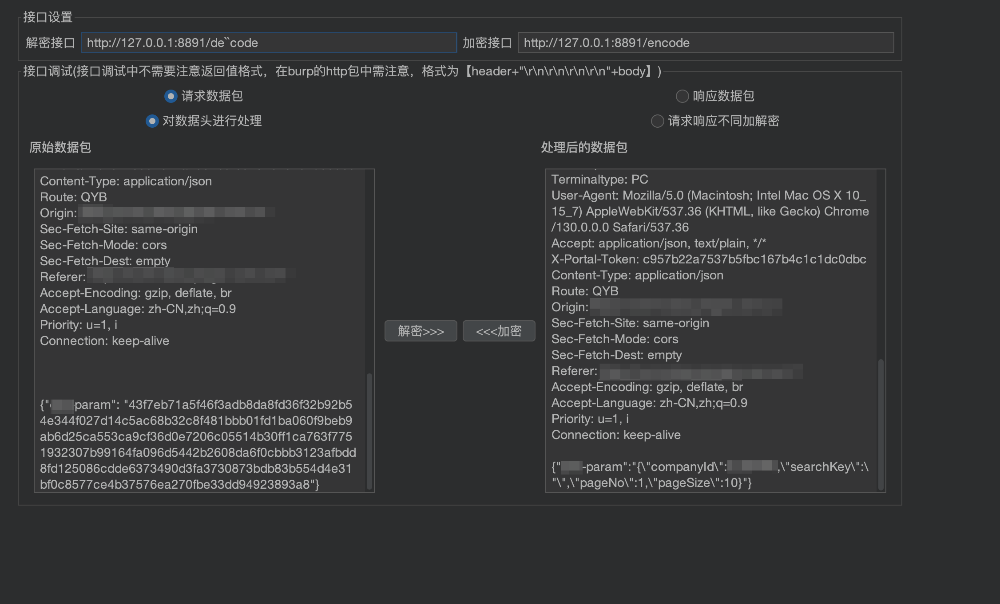
现在把这个密文数据包发送，再配置之前写好的解密模块。
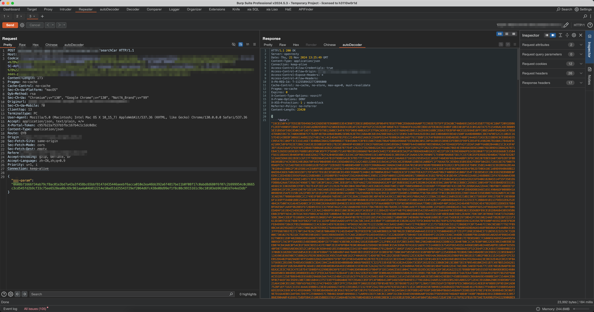
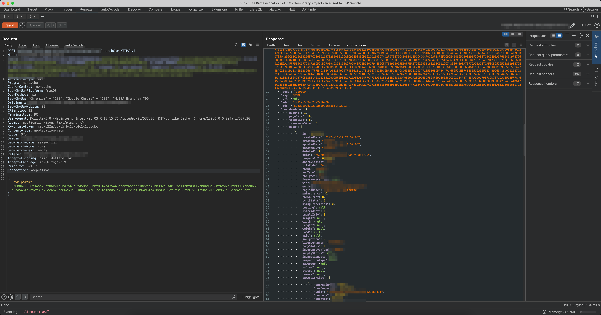
最后就是针对GET，特殊符号的脚本优化过程，这里就不写了。
？
在我把脚本给同事用了一段时间后，他和我说这系统能直接接收明文参数，而且如果你传入的数据是明文，那返回的也是明文。如下图：
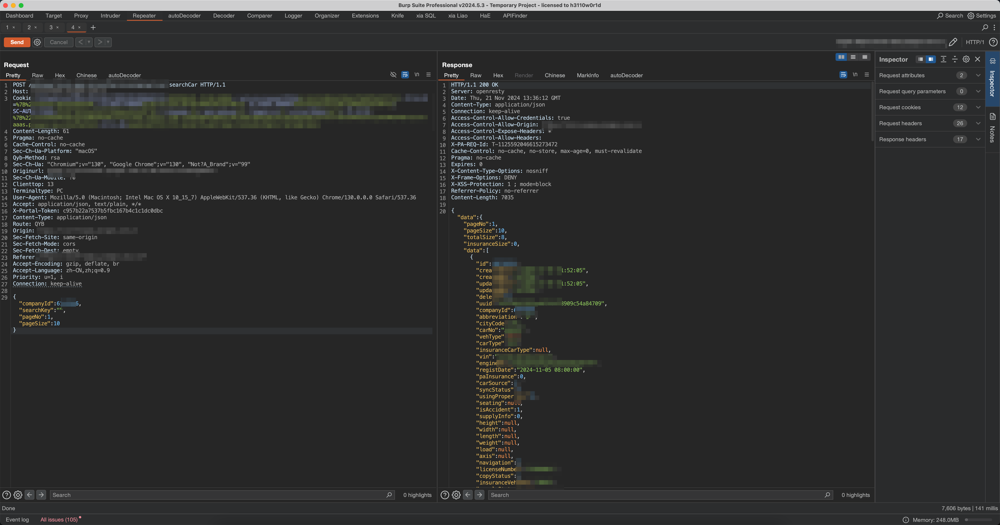
然后晚上回家后，在测这个系统的app端时，也意外发现我抓到的包是明文请求明文响应，域名地址和web端相同，但是第二天上班再抓就发现变成了密文，这意味着服务器是可以同时接收明文参数和密文参数。而且在app上两次抓包结果不一样，说明系统应该有一个参数控制请求参数是否需要加密，而我现在就想找到这个参数。
思路比较简单暴力，在y[“b”].encrypt()加密前，一层一层回溯，查找仔细看if判断和switch类的代码。最后经过枯燥的回溯后，找到这里。
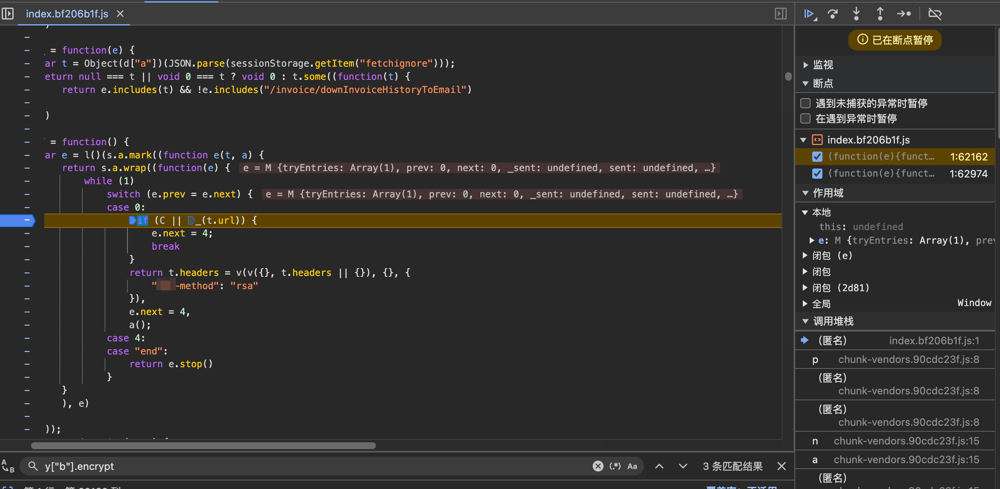
1 | switch (e.prev = e.next) { |
在这个代码的if中，有一个 || 或判断，在这里，只要C或者 _(t.url)中至少有一个为true，就会走下面的e.next = 4然后结束循环，反之就走下面的代码，虽然也会有e.next = 4，但是下面的a()，跟进后可以看到就是加密函数
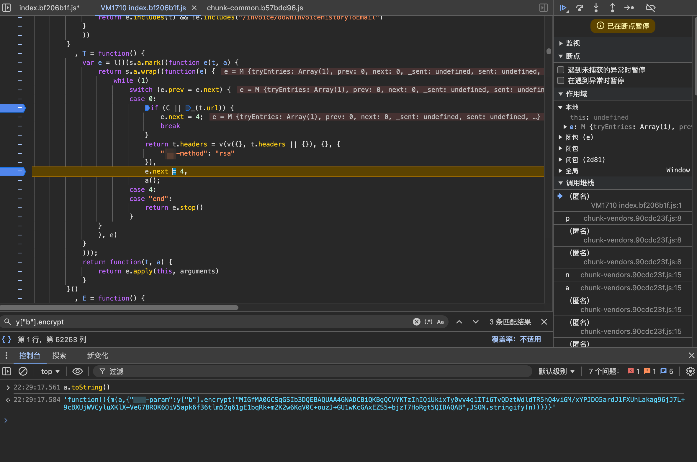
所以思路一下子就清晰了，要让C或者 _(t.url)返回true。
C
先说C。C变量是false，由于学艺不精和工作上的干扰，花了半个多小时的回溯才找到了C的定义，但又是因为学艺不精，看不懂代码（先挖个坑，明天上班的时候补上）。
不过可以记录一下找这个C变量的方法，断点到相关代码，在右边作用域中一层一层找，找到这个闭包（2d81），然后开始搜关键字2d81，主要是去查闭包（2d81）的定义位置，查看整个代码中有关 2d81 的定义部分，可能会找到变量 C 的赋值语句，这里搜了一下，不多。
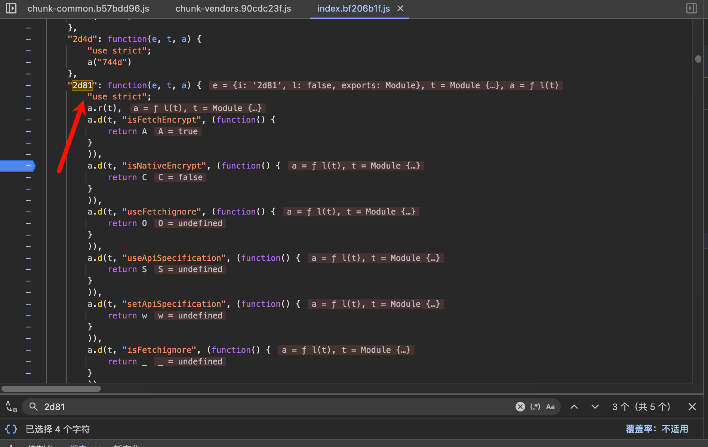
但是这个代码块太大，我把文件下载下来后，在vscode中格式化查看，然后再大小写敏感的搜了一下C，就找到了
1 | C = !Object(p["p"])() && Object(p["d"])() |
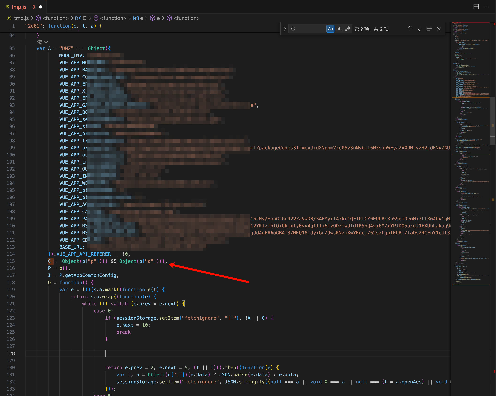
浏览器中的返回结果也确定了这就是C的定义代码
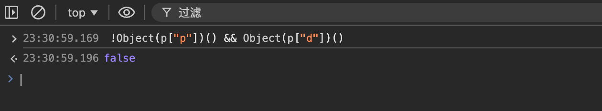
跟进这两个函数后可以看到，p是检查ua中是否存在xxxsdk，而d是检查ua中是否存在EQBANDROID、EQBIOS、QYBHarmonyOS这三个字符串。
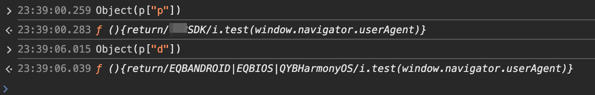
那总结一下，如果要C为true，则需要ua中不能出现xxxsdk，且要出现EQBANDROID、EQBIOS、QYBHarmonyOS这三个字符串其中一个或多个，而且字符串大小写不敏感。
测试一下，用浏览器插件改个ua，再刷新一下页面
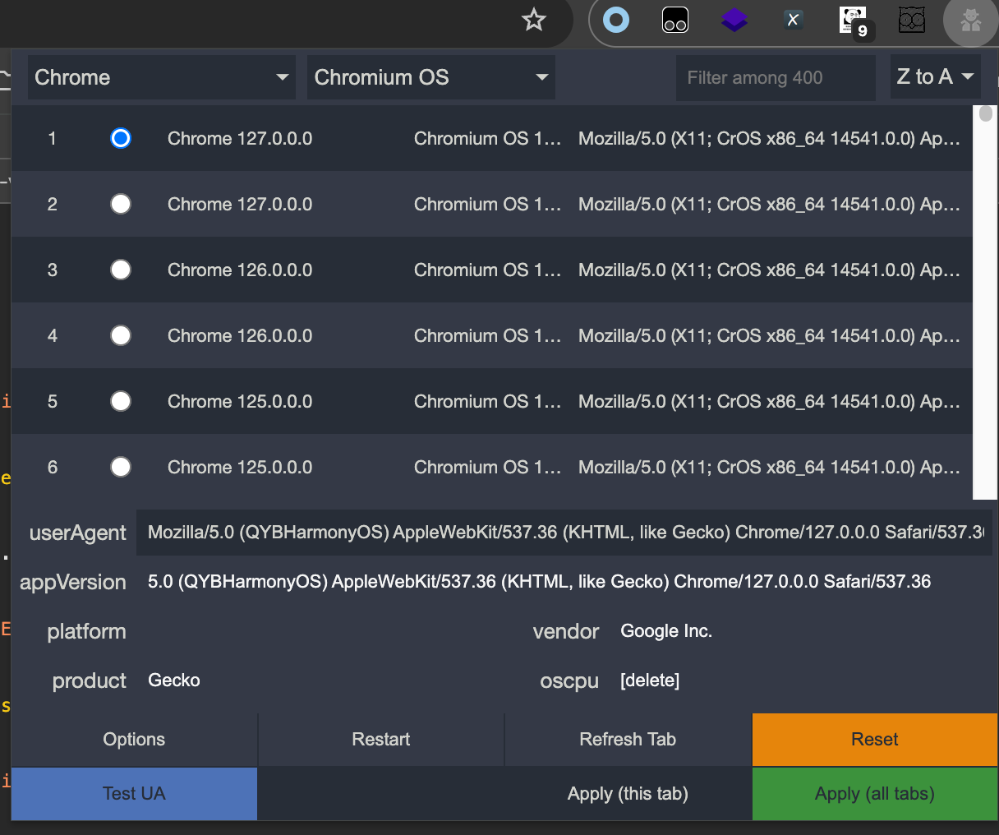
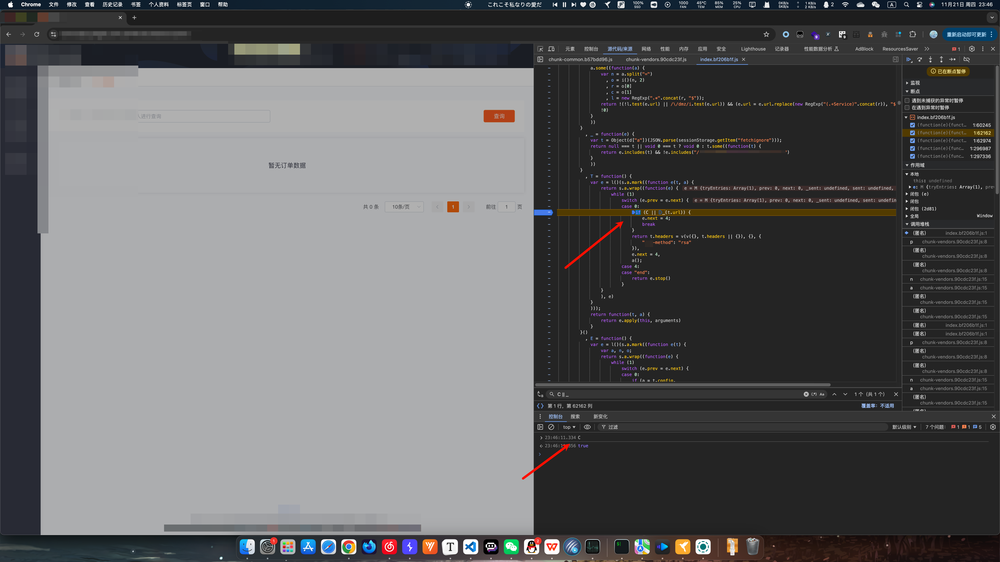
ok,解决！
_(t.url)
C解决了，再来看 _(t.url)，这个_函数的入参是当前请求的url，而JSON.parse(sessionStorage.getItem(“fetchignore”))中是一堆接口url，有一些验证码、登录相关的接口，可能是白名单，无需加密。所以可以大致猜测这个函数是判断当前请求是否在白名单中。
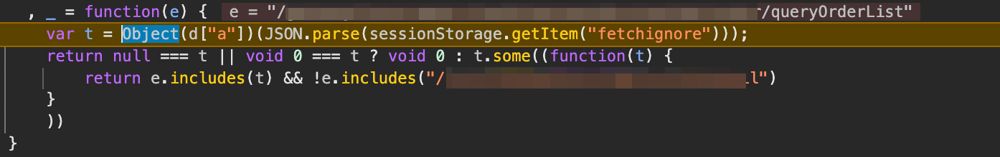
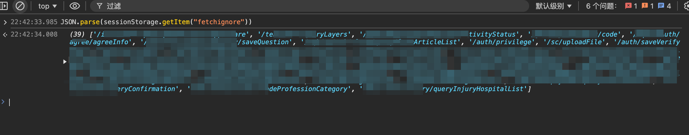
其实分析函数作用也没啥用，直接改个返回就可以了，把这个函数的返回结果改为true就可以了，直接写在burp的replace rule中，然后重新加载这个index.js文件就好了，这里有个细节是，最好在burp中找到相关字符串拿过来进行替换，而不是用浏览器中的字符串，浏览器中的js代码一般是格式化美化过的，可能会多一些缩进和空格，burp会匹配不到。
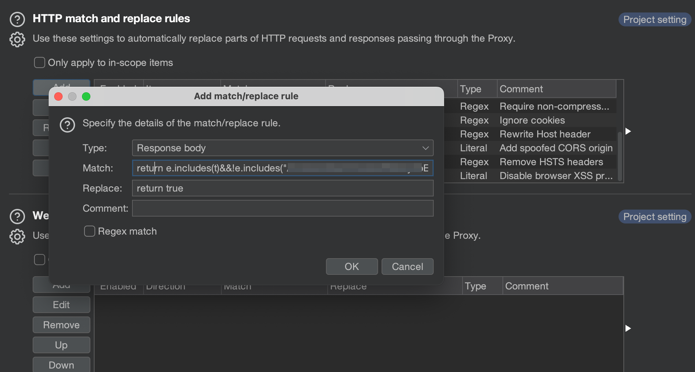
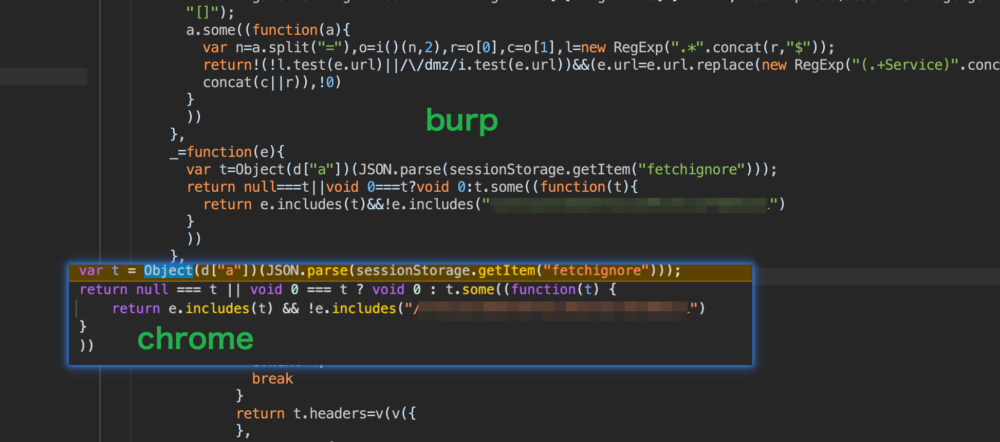
（此外，关于app，由于app部分页面是h5加载的，所以可以在它加载js时修改_函数，不过app的js是在chunk.package.js中，函数内容一样。）